🖥️ Remote Login (NoMachine)
Remotely access the RobiS robot using the built-in NoMachine server.
✅ Default Credentials
- Username:
robify - Password:
robify1234(also used forsudo)
🔗 Standard Connection Steps
-
Install NoMachine on your computer:
https://downloads.nomachine.com/
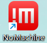
-
Skip the corresponding operation steps according to the instructions, check them, and click OK in sequence.
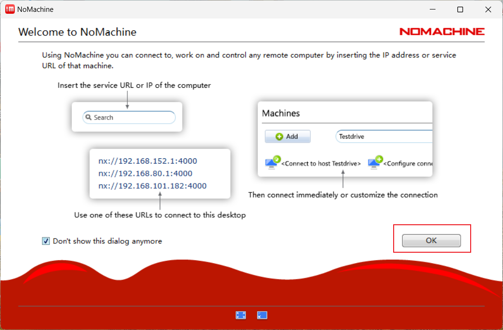
-
The navigation car is equipped with the corresponding NoMachine remote software (Arm8 architecture) at the factory. When the car is connected to the same LAN as the computer (mandatory), the SSH service of the current York car will be automatically displayed on the following interface. Double click to proceed.
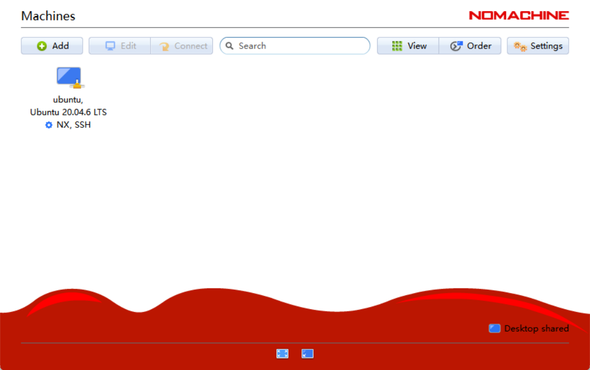
-
Next, if you reinstall the NoMachine server, confirm to regenerate the SSL certificate, and select
OK. Not skipped.
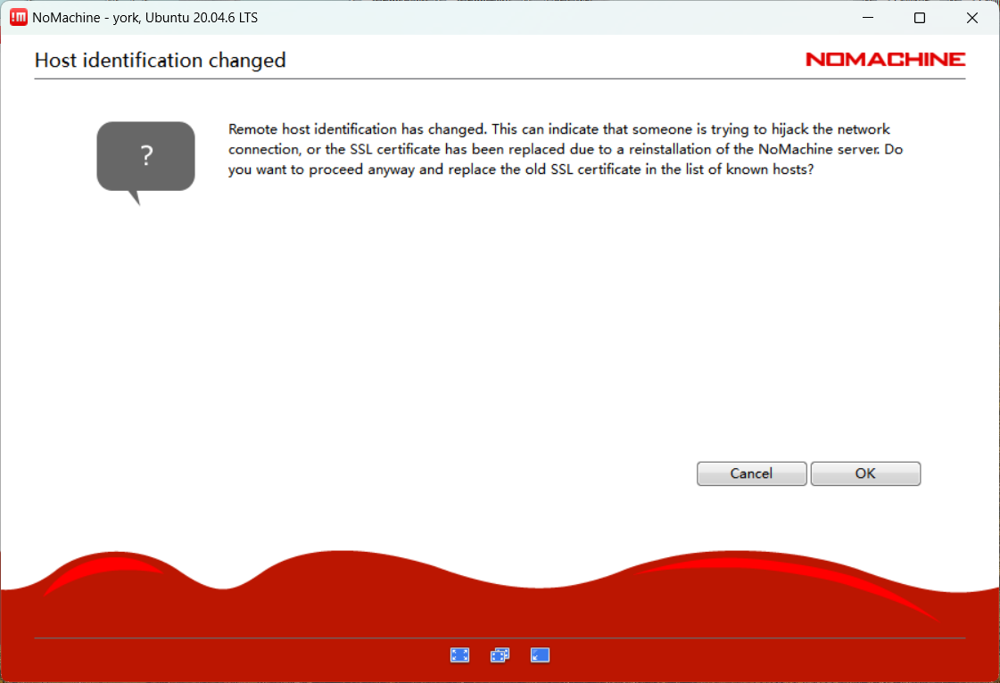
-
Login with: Username:
robifyPassword:robify1234
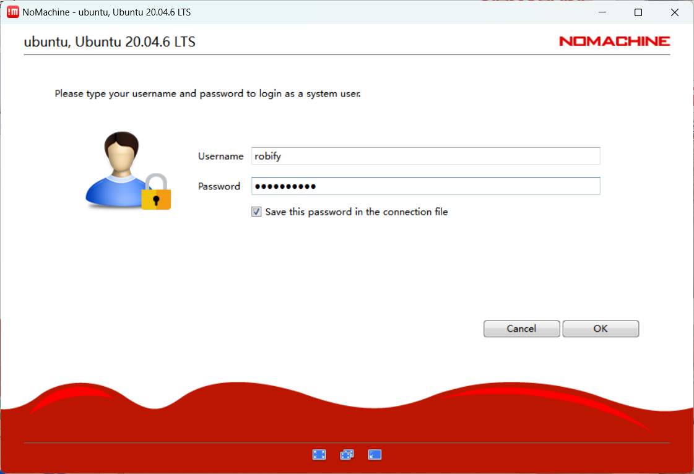
-
Then you will see some tutorial instructions for some tools, skip the corresponding operation steps according to the instructions, check them, click
OKin sequence, and wait to enter the system.
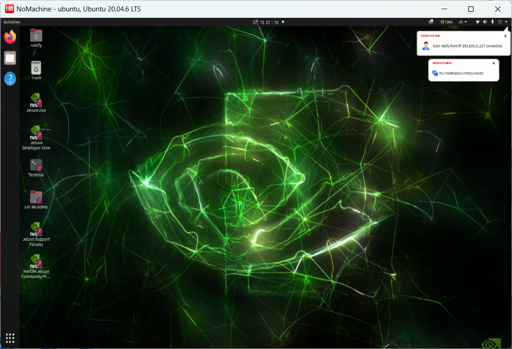
❗ Troubleshooting
Issue: Multiple Robots Detected
-
Click Edit Connection
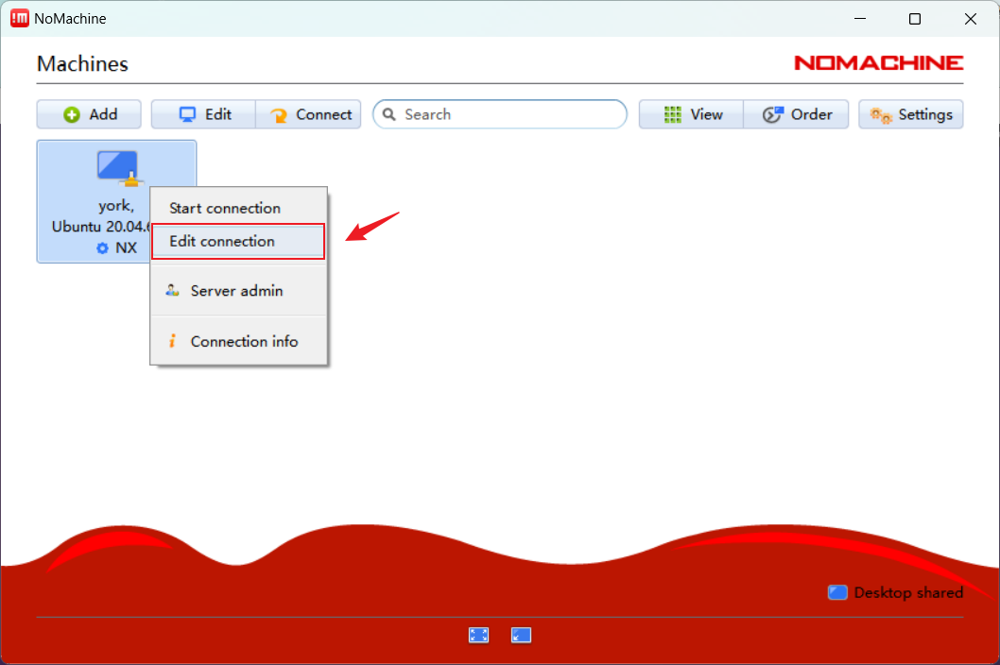
-
Set correct IP manually. Port:
4000, Protocol:NX
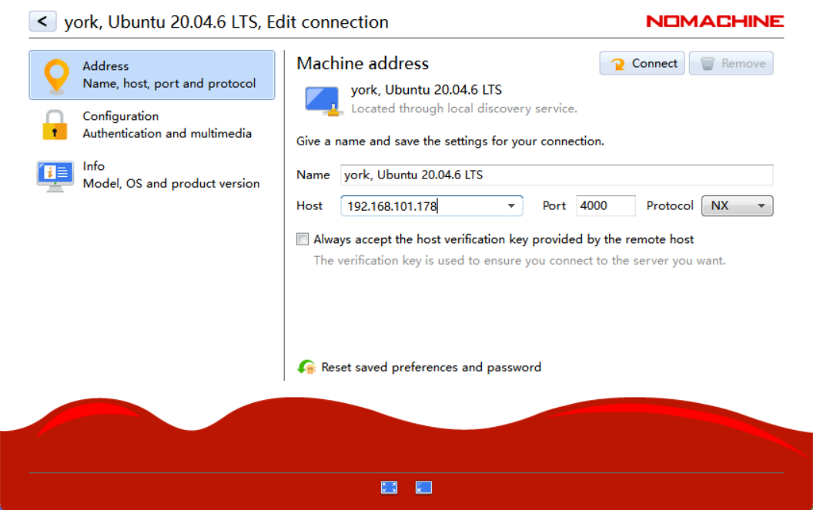
-
Use
ifconfigon the robot to check IP address.
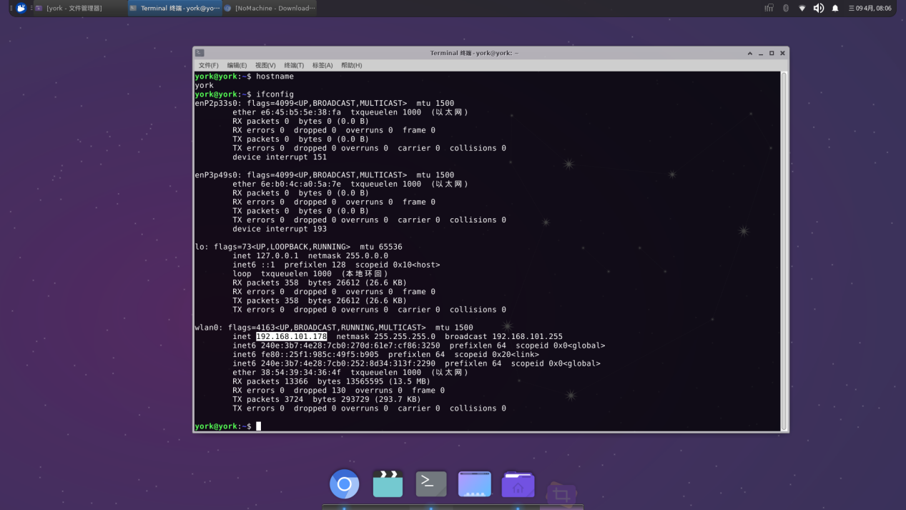
-
After switching IP, connecting again will prompt for IP address change. Select
[OK]
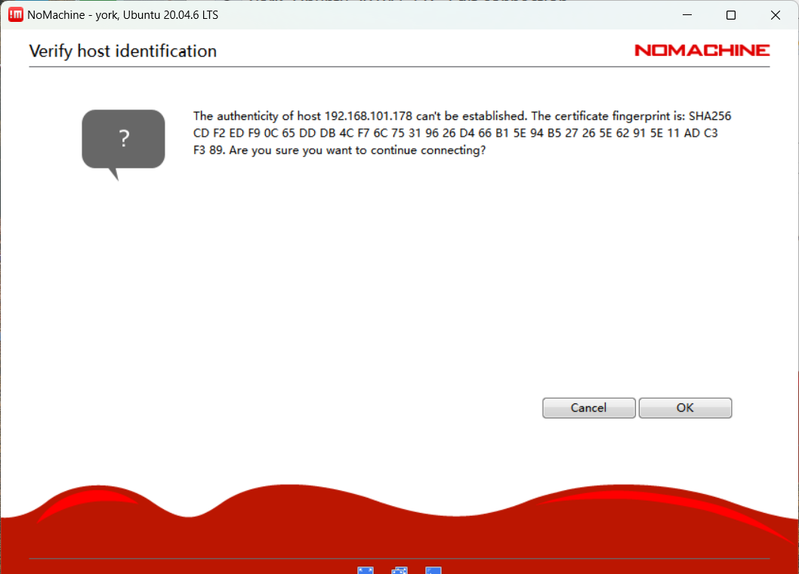
Issue: Certificate Expired
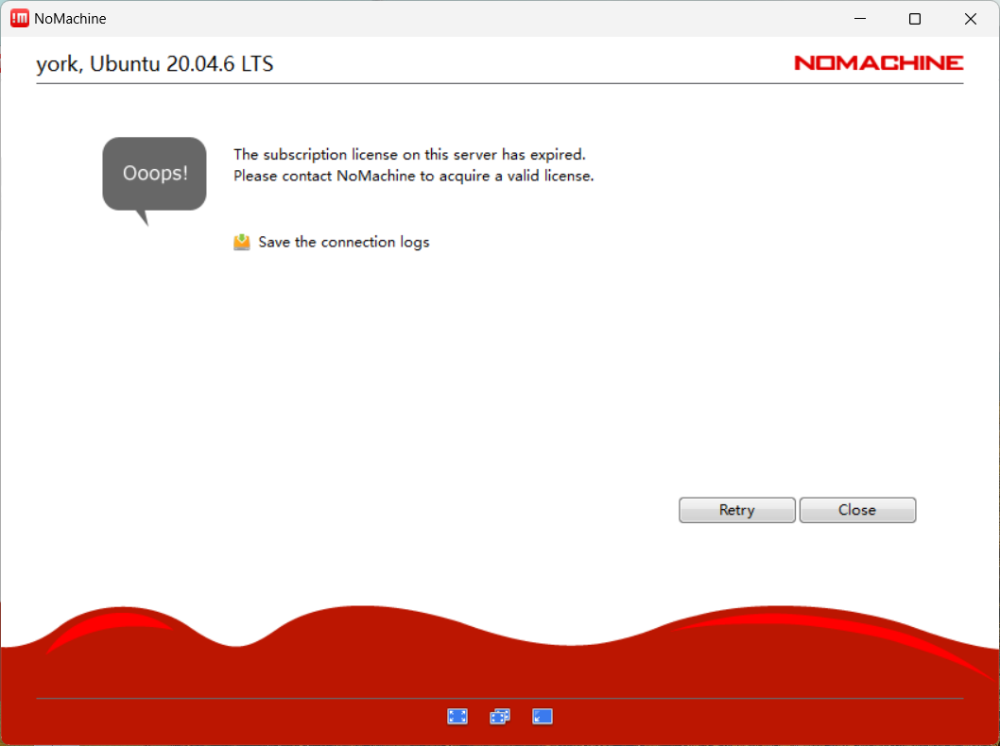
Reinstall NoMachine on the robot:
sudo apt-get remove nomachine-enterprise-desktop
sudo dpkg -i nomachine_8.16.1_1_arm64.deb
Make sure the .deb file is in the correct directory.
🧠 Tip: If the touch screen is unresponsive on first login, press Enter before typing the password.